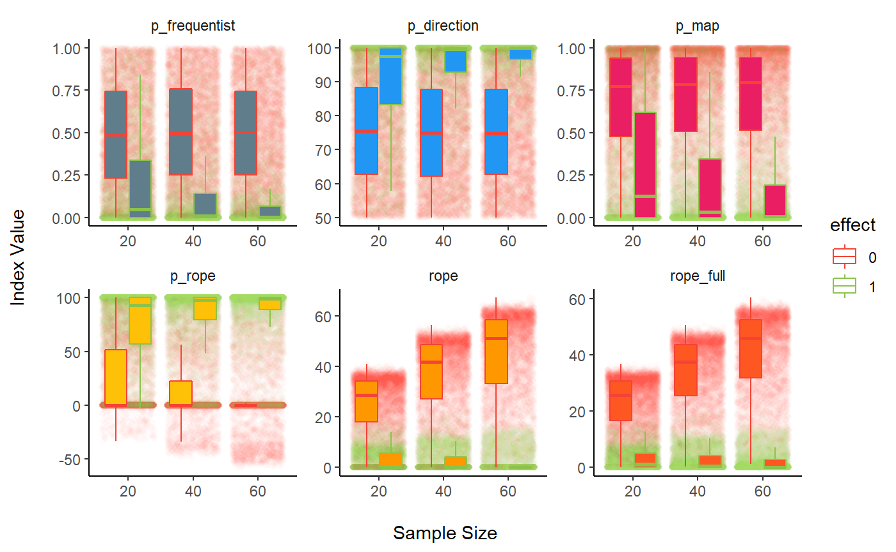
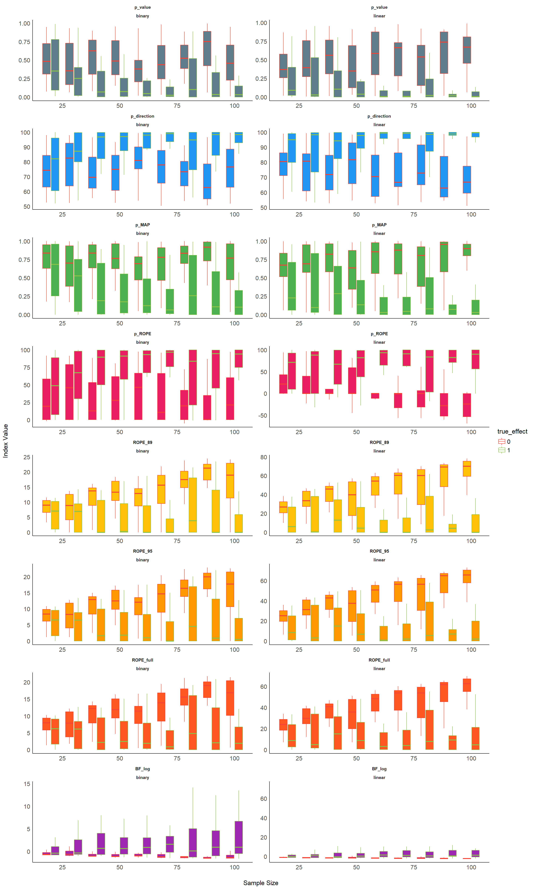
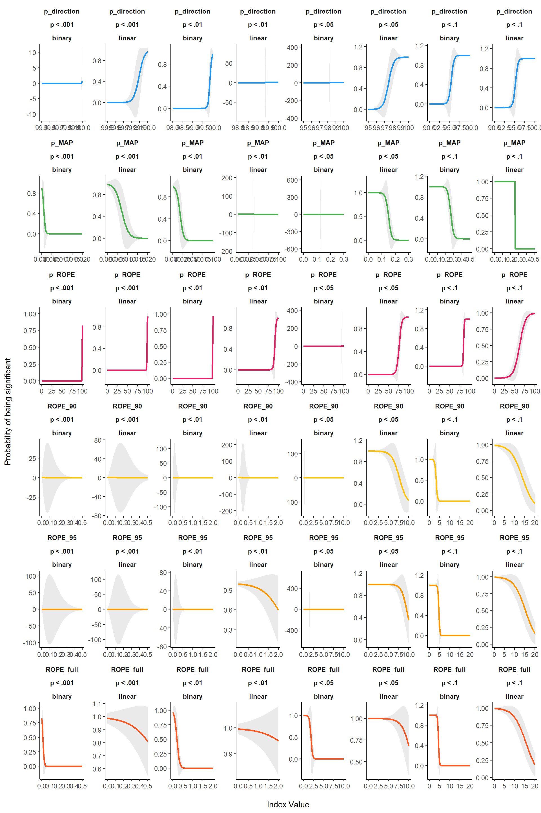
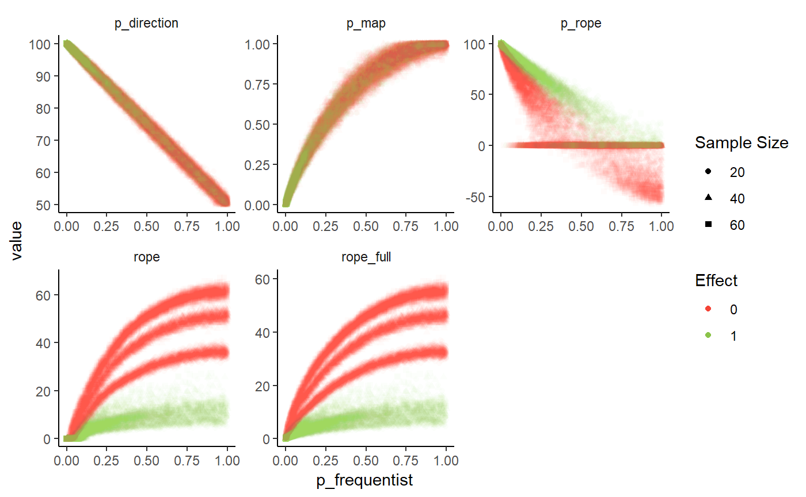
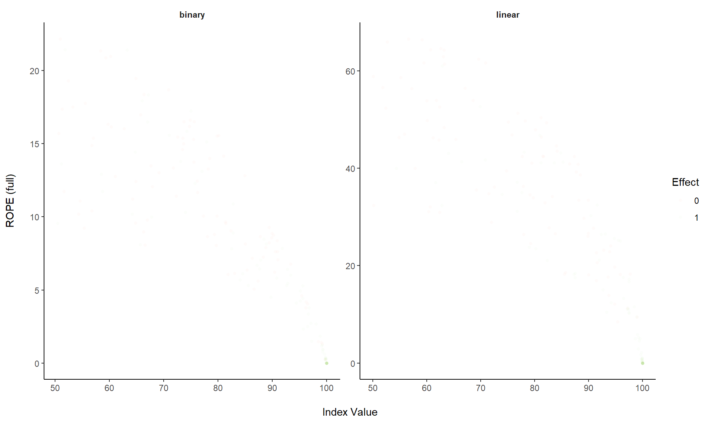
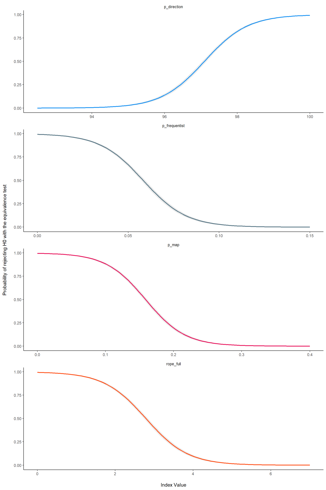

vignettes/indicesExistenceComparison.Rmd
indicesExistenceComparison.RmdThis vignette can be referred to by citing the package:
There is now a general agreement that the Bayesian statistical framework is the right way to go for psychological science. Nevertheless, its flexible nature is its power and weakness, for there is no agreement about what indices should be computed or reported. Moreover, the lack of a consensual index of effect existence, such as the frequentist p-value, possibly contributes to the unnecessary murkiness that many non-familiar readers perceive in Bayesian statistics. Thus, this study describes and compares several indices of effect existence, provide intuitive visual representation of the “behaviour” of such indices in relationship with traditional metrics such as sample size and frequentist significance. The results contribute to develop the intuitive understanding of the values that researchers report and allow to draw recommendations for Bayesian statistics description, critical for the standardization of scientific reporting.
The Bayesian framework is quickly gaining popularity among psychologists and neuroscientists (Andrews and Baguley 2013). Reasons to prefer this approach are reliability, better accuracy in noisy data, better estimation for small samples, less proneness to type I error, the possibility of introducing prior knowledge into the analysis and, critically, results intuitiveness and their straightforward interpretation (Dienes and Mclatchie 2018; Etz and Vandekerckhove 2016; Kruschke 2010; Kruschke, Aguinis, and Joo 2012; Wagenmakers et al. 2018; Wagenmakers, Morey, and Lee 2016). The frequentist approach has been associated with the focus on null hypothesis testing, and the misuse of p-values has been shown to critically contribute to the reproducibility crisis of psychological science (Chambers et al. 2014; Szucs and Ioannidis 2016). There is a general agreement that the generalization of the Bayesian approach is a way of overcoming this issue (Benjamin et al. 2018; Etz and Vandekerckhove 2016; Maxwell, Lau, and Howard 2015; Wagenmakers et al. 2017).
While the probabilistic reasoning promoted by the Bayesian framework is pervading most of data science aspects, it is already well established for statistical modelling. This facet, on which psychology massively rely, could roughly be grouped into two soft-edged categories; predictive and structural modelling. Although a statistical model can (often) serve both purposes, predictive modelling is devoted to build and find the best model that accurately predicts a given outcome. It is centred around the concepts such as fitting metrics, predictive accuracy and model comparison. At the extrema of this dimension lie machine and deep learning models, used for their strong predictive power, often at the expense of Human readability (these models has been often refer to as “black-boxes”, emphasising the difficulty to appraise their internal functioning; Burrell 2016; Castelvecchi 2016; Snoek, Larochelle, and Adams 2012). On the other side, psychologists are often using more simple models (for instance related to the general linear framework) to explore their data. Within this framework, the goal switches from building the best model to understanding the parameters inside the model. In reality, the methodological pipeline often starts with predictive modelling involving model comparison (“what is the best model of the world (i.e., the observed variable)”) and then seemingly transit to structural modelling: “given this model of the world, how the effects (i.e., model parameters) are influencing the outcome”. For this last part, they often rely on an index of effect “existence”.
Indeed, while one of the strengths of the Bayesian framework is its probabilistic parameter estimation, allowing to quantify the inherent uncertainty associated with each estimation, psychologists are also interested in parameter existence: A decision criterion that allows them to conclude if an effect is “different from 0” (statistically corresponding to either “not negligible” or “not of the opposite direction”). In other words, to know, before taking interest in the importance, relevance or strength of the effect, whether it is related to the outcome in a given direction. This need has led to the wide adoption of the frequentist p-value, used as an index of effect existence, and its acceptance was accompanied with the creation of arbitrary clusters for its classification (.05, .01 and .001). Unfortunately, these heuristics have severely rigidify, becoming a goal and threshold to reach rather than a tool for understanding the data (Cohen 2016; Kirk 1996).
Thus, the ability of the Bayesian framework to answer psychological questions without the need of such null-hypothesis testing indices is often promoted as the promise of a “a new world without p-value” as opposed to the old and flawed frequentist one. Nonetheless, it seems that “effect existence” indices and criteria are useful for Humans to gain an intuitive understanding of the interactions and structure of their data. It is thus unsurprising that the development of Bayesian user-friendly implementations was accompanied with the promotion of the Bayes Factor (BF), an index reflecting the predictive performance of a model against another (e.g., the null vs. the alternative hypothesis; Jeffreys 1998; Ly, Verhagen, and Wagenmakers 2016). It provides many advantages over the p value, having a straightforward interpretation (“the data were 3 times (BF = 3) more likely to occur under the alternative than the null hypothesis”) and allowing to make statements about the alternative, rather than just the null hypothesis (Dienes 2014; Jarosz and Wiley 2014). Moreover, recent mathematical developments allow its computation for complex models (Gronau, Van Erp, et al. 2017; Gronau, Wagenmakers, et al. 2017). Although the BF lives up to the expectations of a solid, valid, intuitive and better index compared to the p value, its use for model selection is still a matter of debate (Piironen and Vehtari 2017). Indeed, as the predictions used for its computation are generated from the prior distributions on the model parameters, it is highly dependent on priors specification (Etz et al. 2018; Kruschke and Liddell 2018). Importantly for the aim of this paper, its use for estimating effect existence of parameters within a larger model remains limited, its computation being technically difficult and its interpretation not as straightforward as for “simple” tests such as t-tests or correlations.
Nevertheless, reflecting the need for such information, researchers have developed other indices based on characteristics of the posterior distribution, which represents the probability distribution of different parameter values given the observed data. This uncertainty can be summarized, for example, by presenting point-estimates of centrality (mean, median, …) and of dispersion (standard deviation, median absolute deviance, …), often accompanied with a percentage (89%, 90% or 95%) of the Highest Density Interval (HDI; referred to as the Credible Interval - CI). Although the Bayesian framework gives the possibility of computing many effect existence indices, no consensus has yet emerged on the ones to use, as no comparison has ever been done. This might be a rebuttal for scientists interested in adopting the Bayesian framework. Moreover, this grey area can increase the difficulty of readers or reviewers unfamiliar with the Bayesian framework to follow the assumptions and conclusions, which could in turn generate unnecessary doubt upon the entire study. While we think that such indices and their interpretation guidelines (in the form of rules of thumb) are useful in practice, we also strongly believe that such indices should be accompanied with the knowledge of the “behaviour” in relationship with sample size and effect size. This knowledge is important for people to implicitly and intuitively appraise the meaning and implication of the mathematical values they report. This could, in turn, prevent the crystallization of the possible heuristics and categories derived from such indices.
Thus, based on the simulation of multiple linear regressions (one of the most widely used models), the present work aims at comparing several indices of effect existence solely derived from the posterior distribution, provide visual representations of the “behaviour” of such indices in relationship with sample size, noise, priors and also the frequentist p-value (an index which, beyond its many flaws, is well known and could be used as a reference for Bayesian neophytes), and draw recommendations for Bayesian statistics reporting.
For all of the simulated models, we computed the following indices:
The Region of Practical Equivalence (ROPE) was defined as ranging from -0.1 to 0.1.
The simulation aimed at modulating the following characteristics:
We generated a dataset for each combination of these characteristics, resulting in a total of 2 * 2 * 9 * 1000 = 36000 Bayesian and frequentist models. The code used for generation is avaible here (please note that it takes usually several days/weeks to complete).
df %>%
select(outcome_type, true_effect, error, sample_size, p_value, p_direction, p_MAP, p_ROPE, ROPE_89, ROPE_95, ROPE_full, BF_log) %>%
gather(index, value, -error, -sample_size, -true_effect, -outcome_type) %>%
mutate(true_effect = as.factor(true_effect),
index = factor(index, levels=c("p_value", "p_direction", "p_MAP", "p_ROPE", "ROPE_89", "ROPE_95", "ROPE_full", "BF_log"))) %>%
mutate(temp = as.factor(cut(error, 10, labels = FALSE))) %>%
group_by(temp) %>%
mutate(error_group = round(mean(error), 1)) %>%
ungroup() %>%
ggplot(aes(x = error_group, y = value, fill = index, colour=true_effect, group = interaction(index, true_effect, error_group))) +
# geom_jitter(shape=16, alpha=0.02) +
geom_boxplot(outlier.shape = NA) +
facet_wrap(~index * outcome_type, scales = "free", ncol=2) +
theme_modern() +
scale_color_manual(values = c(`0` = "#f44336", `1` = "#8BC34A", name="Effect")) +
scale_fill_manual(values = c("p_value"="#607D8B", "p_MAP" = "#4CAF50", "p_direction" = "#2196F3",
"ROPE_89" = "#FFC107", "ROPE_95" = "#FF9800", "ROPE_full" = "#FF5722",
"p_ROPE"="#E91E63", "BF_log"="#9C27B0"), guide=FALSE) +
ylab("Index Value") +
xlab("Noise")
df %>%
select(outcome_type, true_effect, error, sample_size, p_value, p_direction, p_MAP, p_ROPE, ROPE_89, ROPE_95, ROPE_full, BF_log) %>%
gather(index, value, -error, -sample_size, -true_effect, -outcome_type) %>%
mutate(true_effect = as.factor(true_effect),
index = factor(index, levels=c("p_value", "p_direction", "p_MAP", "p_ROPE", "ROPE_89", "ROPE_95", "ROPE_full", "BF_log"))) %>%
mutate(temp = as.factor(cut(sample_size, 10, labels = FALSE))) %>%
group_by(temp) %>%
mutate(size_group = round(mean(sample_size))) %>%
ungroup() %>%
ggplot(aes(x = size_group, y = value, fill = index, colour=true_effect, group = interaction(index, true_effect, size_group))) +
# geom_jitter(shape=16, alpha=0.02) +
geom_boxplot(outlier.shape = NA) +
facet_wrap(~index * outcome_type, scales = "free", ncol=2) +
theme_modern() +
scale_color_manual(values = c(`0` = "#f44336", `1` = "#8BC34A", name="Effect")) +
scale_fill_manual(values = c("p_value"="#607D8B", "p_MAP" = "#4CAF50", "p_direction" = "#2196F3",
"ROPE_89" = "#FFC107", "ROPE_95" = "#FF9800", "ROPE_full" = "#FF5722",
"p_ROPE"="#E91E63", "BF_log"="#9C27B0"), guide=FALSE) +
ylab("Index Value") +
xlab("Sample Size")
df %>%
select(outcome_type, true_effect, error, sample_size, p_value, p_direction, p_MAP, p_ROPE, ROPE_89, ROPE_95, ROPE_full, BF_log) %>%
gather(index, value, -error, -sample_size, -true_effect, -outcome_type, -p_value) %>%
mutate(true_effect = as.factor(true_effect),
index = factor(index, levels=c("p_direction", "p_MAP", "p_ROPE", "ROPE_89", "ROPE_95", "ROPE_full", "BF_log"))) %>%
mutate(temp = as.factor(cut(sample_size, 3, labels = FALSE))) %>%
group_by(temp) %>%
mutate(size_group = as.character(round(mean(sample_size)))) %>%
ungroup() %>%
ggplot(aes(x = p_value, y = value, color = true_effect, shape=size_group)) +
geom_point(alpha=0.025, stroke = 0, shape=16) +
facet_wrap(~index * outcome_type, scales = "free", ncol=2) +
theme_modern() +
scale_color_manual(values = c(`0` = "#f44336", `1` = "#8BC34A"), name="Effect") +
guides(colour = guide_legend(override.aes = list(alpha = 1)),
shape = guide_legend(override.aes = list(alpha = 1), title="Sample Size"))
df$sig_1 <- factor(ifelse(df$p_value >= .1, "n.s.", "-"), levels=c("n.s.", "-"))
df$sig_05 <- factor(ifelse(df$p_value >= .05, "n.s.", "*"), levels=c("n.s.", "*"))
df$sig_01 <- factor(ifelse(df$p_value >= .01, "n.s.", "**"), levels=c("n.s.", "**"))
df$sig_001 <- factor(ifelse(df$p_value >= .001, "n.s.", "***"), levels=c("n.s.", "***"))
get_data <- function(predictor, outcome, lbound=0, ubound=0.3){
fit <- suppressWarnings(glm(paste(outcome, "~ outcome_type * ", predictor), data=df, family = "binomial"))
# data <- data.frame(x=rep(1:100, 2))
data <- data.frame(outcome_type=rep(c("linear", "binary"), each=100))
data[predictor] <- rep(seq(lbound, ubound, length.out = 100), 2)
data$index <- predictor
predict_fit <- predict(fit, newdata=data, type="response", se.fit = TRUE)
data[outcome] <- predict_fit$fit
data$CI_lower <- predict_fit$fit - (qnorm(0.99) * predict_fit$se.fit)
data$CI_upper <- predict_fit$fit + (qnorm(0.99) * predict_fit$se.fit)
data <-
select(
data,
"value" := !!predictor,
!!outcome,
.data$outcome_type,
.data$index,
.data$CI_lower,
.data$CI_upper
)
return(data)
}
rbind(
rbind(
get_data(predictor="p_direction", outcome="sig_001", lbound=99.5, ubound=100),
get_data(predictor="p_MAP", outcome="sig_001", lbound=0, ubound=0.01),
get_data(predictor="p_ROPE", outcome="sig_001", lbound=97, ubound=100),
get_data(predictor="ROPE_89", outcome="sig_001", lbound=0, ubound=0.5),
get_data(predictor="ROPE_95", outcome="sig_001", lbound=0, ubound=0.5),
get_data(predictor="ROPE_full", outcome="sig_001", lbound=0, ubound=0.5),
get_data(predictor="BF_log", outcome="sig_001", lbound=0, ubound=10)
) %>%
rename("sig"=sig_001) %>%
mutate(threshold="p < .001"),
rbind(
get_data(predictor="p_direction", outcome="sig_01", lbound=98, ubound=100),
get_data(predictor="p_MAP", outcome="sig_01", lbound=0, ubound=0.1),
get_data(predictor="p_ROPE", outcome="sig_01", lbound=85, ubound=100),
get_data(predictor="ROPE_89", outcome="sig_01", lbound=0, ubound=2),
get_data(predictor="ROPE_95", outcome="sig_01", lbound=0, ubound=2),
get_data(predictor="ROPE_full", outcome="sig_01", lbound=0, ubound=2),
get_data(predictor="BF_log", outcome="sig_01", lbound=0, ubound=5)
) %>%
rename("sig"=sig_01) %>%
mutate(threshold="p < .01"),
rbind(
get_data(predictor="p_direction", outcome="sig_05", lbound=95, ubound=100),
get_data(predictor="p_MAP", outcome="sig_05", lbound=0, ubound=0.3),
get_data(predictor="p_ROPE", outcome="sig_05", lbound=50, ubound=100),
get_data(predictor="ROPE_89", outcome="sig_05", lbound=0, ubound=10),
get_data(predictor="ROPE_95", outcome="sig_05", lbound=0, ubound=10),
get_data(predictor="ROPE_full", outcome="sig_05", lbound=0, ubound=10),
get_data(predictor="BF_log", outcome="sig_05", lbound=0, ubound=2)
) %>%
rename("sig"=sig_05) %>%
mutate(threshold="p < .05"),
rbind(
get_data(predictor="p_direction", outcome="sig_1", lbound=90, ubound=100),
get_data(predictor="p_MAP", outcome="sig_1", lbound=0, ubound=0.5),
get_data(predictor="p_ROPE", outcome="sig_1", lbound=25, ubound=100),
get_data(predictor="ROPE_89", outcome="sig_1", lbound=0, ubound=20),
get_data(predictor="ROPE_95", outcome="sig_1", lbound=0, ubound=20),
get_data(predictor="ROPE_full", outcome="sig_1", lbound=0, ubound=20),
get_data(predictor="BF_log", outcome="sig_1", lbound=0, ubound=1)
) %>%
rename("sig"=sig_1) %>%
mutate(threshold="p < .1")
) %>%
mutate(index = as.factor(index)) %>%
ggplot(aes(x=value, y=sig)) +
geom_ribbon(aes(ymin=CI_lower, ymax=CI_upper), alpha=0.1) +
geom_line(aes(color=index), size=1) +
facet_wrap(~ index * threshold * outcome_type, scales = "free", ncol=8) +
theme_modern() +
scale_color_manual(values = c("p_value"="#607D8B", "p_MAP" = "#4CAF50", "p_direction" = "#2196F3",
"ROPE_89" = "#FFC107", "ROPE_95" = "#FF9800", "ROPE_full" = "#FF5722",
"p_ROPE"="#E91E63", "BF_log"="#9C27B0"), guide=FALSE) +
ylab("Probability of being significant") +
xlab("Index Value")
df$equivalence_95 <- factor(ifelse(df$ROPE_95 == 0, "significant", "n.s."), levels=c("n.s.", "significant"))
df$equivalence_89 <- factor(ifelse(df$ROPE_89 == 0, "significant", "n.s."), levels=c("n.s.", "significant"))
rbind(
rbind(
get_data(predictor="p_direction", outcome="equivalence_95", lbound=97.5, ubound=100),
get_data(predictor="p_MAP", outcome="equivalence_95", lbound=0, ubound=0.2),
get_data(predictor="p_ROPE", outcome="equivalence_95", lbound=92.5, ubound=97.5),
get_data(predictor="ROPE_89", outcome="equivalence_95", lbound=0, ubound=3),
get_data(predictor="ROPE_full", outcome="equivalence_95", lbound=0, ubound=3),
get_data(predictor="BF_log", outcome="equivalence_95", lbound=0.5, ubound=2.5)
) %>%
rename("equivalence"=equivalence_95) %>%
mutate(level="95 HDI"),
rbind(
get_data(predictor="p_direction", outcome="equivalence_89", lbound=99.5, ubound=100),
get_data(predictor="p_MAP", outcome="equivalence_89", lbound=0, ubound=0.02),
get_data(predictor="p_ROPE", outcome="equivalence_89", lbound=0, ubound=100),
get_data(predictor="ROPE_95", outcome="equivalence_89", lbound=0, ubound=0.5),
get_data(predictor="ROPE_full", outcome="equivalence_89", lbound=0, ubound=0.5),
get_data(predictor="BF_log", outcome="equivalence_89", lbound=0, ubound=3)
) %>%
rename("equivalence"=equivalence_89) %>%
mutate(level="90 HDI")
) %>%
ggplot(aes(x=value, y=equivalence)) +
geom_ribbon(aes(ymin=CI_lower, ymax=CI_upper), alpha=0.1) +
geom_line(aes(color=index), size=1) +
facet_wrap(~ index * level * outcome_type, scales = "free", nrow=7) +
theme_modern() +
scale_color_manual(values = c("p_value"="#607D8B", "p_MAP" = "#4CAF50", "p_direction" = "#2196F3",
"ROPE_89" = "#FFC107", "ROPE_95" = "#FF9800", "ROPE_full" = "#FF5722",
"p_ROPE"="#E91E63", "BF_log"="#9C27B0"), guide=FALSE) +
ylab("Probability of rejecting H0 with the equivalence test") +
xlab("Index Value")
df %>%
mutate(true_effect = as.factor(true_effect)) %>%
ggplot(aes(x=p_direction, y=ROPE_full, color=true_effect)) +
geom_point(alpha=0.025, stroke = 0, shape=16) +
facet_wrap(~ outcome_type, scales = "free", ncol=2) +
theme_modern() +
scale_color_manual(values = c(`0` = "#f44336", `1` = "#8BC34A"), name="Effect") +
ylab("ROPE (full)") +
xlab("Probability of Direction (pd)")
Based on the simulation of multiple linear regressions, the present work aimed at comparing several indices of effect existence solely derived from the posterior distribution, provide visual representations of the “behaviour” of such indices in relationship with sample size, noise, priors and the frequentist p-value.
While this comparison with a frequentist index may seem counterintuitive or wrong (as the Bayesian thinking is intrinsically different from the frequentist framework), we believe that this comparison is interesting for didactic reasons. The frequentist p-value “speaks” to many and can thus be seen as a reference and a way to facilitate the shift toward the Bayesian framework. This does not preclude, however, that a change in the general paradigm of effect existence seeking in necessary, and that Bayesian indices are fundamentally different from the frequentist p, rather than mere approximations or equivalents. Critically, we strongly agree on the distinction and possible dissociation between an effect’s existence and meaningfulness (Lakens, Scheel, and Isager 2018). Nevertheless, we believe that assessing whether an effect is “meaningful” is highly dependent on the literature, priors, novelty, context or field, and that it cannot be assessed based solely on a statistical index (even though some of the indices, such as the ROPE-related ones, attempt at bridging existence with meaningfulness). Thus, researchers should rely on statistics to assess effect existence (as well as size and direction estimation), and systematically, but contextually, discuss its meaning and importance within a larger perspective.
Conclusions can be found in the guidelines section.
Andrews, Mark, and Thom Baguley. 2013. “Prior Approval: The Growth of Bayesian Methods in Psychology.” British Journal of Mathematical and Statistical Psychology 66 (1): 1–7.
Benjamin, Daniel J, James O Berger, Magnus Johannesson, Brian A Nosek, E-J Wagenmakers, Richard Berk, Kenneth A Bollen, et al. 2018. “Redefine Statistical Significance.” Nature Human Behaviour 2 (1): 6.
Burrell, Jenna. 2016. “How the Machine ‘Thinks’: Understanding Opacity in Machine Learning Algorithms.” Big Data & Society 3 (1): 2053951715622512.
Castelvecchi, Davide. 2016. “Can We Open the Black Box of Ai?” Nature News 538 (7623): 20.
Chambers, Christopher D, Eva Feredoes, Suresh Daniel Muthukumaraswamy, and Peter Etchells. 2014. “Instead of ’Playing the Game’ It Is Time to Change the Rules: Registered Reports at Aims Neuroscience and Beyond.” AIMS Neuroscience 1 (1): 4–17.
Cohen, Jacob. 2016. “The Earth Is Round (P<. 05).” In What If There Were No Significance Tests?, 69–82. Routledge.
Dienes, Zoltan. 2014. “Using Bayes to Get the Most Out of Non-Significant Results.” Frontiers in Psychology 5: 781.
Dienes, Zoltan, and Neil Mclatchie. 2018. “Four Reasons to Prefer Bayesian Analyses over Significance Testing.” Psychonomic Bulletin & Review 25 (1): 207–18.
Etz, Alexander, Julia M Haaf, Jeffrey N Rouder, and Joachim Vandekerckhove. 2018. “Bayesian Inference and Testing Any Hypothesis You Can Specify.” Advances in Methods and Practices in Psychological Science, 2515245918773087.
Etz, Alexander, and Joachim Vandekerckhove. 2016. “A Bayesian Perspective on the Reproducibility Project: Psychology.” PloS One 11 (2): e0149794.
Gronau, Quentin F, Sara Van Erp, Daniel W Heck, Joseph Cesario, Kai J Jonas, and Eric-Jan Wagenmakers. 2017. “A Bayesian Model-Averaged Meta-Analysis of the Power Pose Effect with Informed and Default Priors: The Case of Felt Power.” Comprehensive Results in Social Psychology 2 (1): 123–38.
Gronau, Quentin F, Eric-Jan Wagenmakers, Daniel W Heck, and Dora Matzke. 2017. “A Simple Method for Comparing Complex Models: Bayesian Model Comparison for Hierarchical Multinomial Processing Tree Models Using Warp-Iii Bridge Sampling.” Psychometrika, 1–24.
Jarosz, Andrew F, and Jennifer Wiley. 2014. “What Are the Odds? A Practical Guide to Computing and Reporting Bayes Factors.” The Journal of Problem Solving 7 (1): 2.
Jeffreys, Harold. 1998. The Theory of Probability. OUP Oxford.
Kirk, Roger E. 1996. “Practical Significance: A Concept Whose Time Has Come.” Educational and Psychological Measurement 56 (5): 746–59.
Kruschke, John. 2014. Doing Bayesian Data Analysis: A Tutorial with R, Jags, and Stan. Academic Press.
Kruschke, John K. 2010. “What to Believe: Bayesian Methods for Data Analysis.” Trends in Cognitive Sciences 14 (7): 293–300.
Kruschke, John K, Herman Aguinis, and Harry Joo. 2012. “The Time Has Come: Bayesian Methods for Data Analysis in the Organizational Sciences.” Organizational Research Methods 15 (4): 722–52.
Kruschke, John K, and Torrin M Liddell. 2018. “The Bayesian New Statistics: Hypothesis Testing, Estimation, Meta-Analysis, and Power Analysis from a Bayesian Perspective.” Psychonomic Bulletin & Review 25 (1): 178–206.
Lakens, Daniël, Anne M Scheel, and Peder M Isager. 2018. “Equivalence Testing for Psychological Research: A Tutorial.” Advances in Methods and Practices in Psychological Science, 2515245918770963.
Ly, Alexander, Josine Verhagen, and Eric-Jan Wagenmakers. 2016. “Harold Jeffreys’s Default Bayes Factor Hypothesis Tests: Explanation, Extension, and Application in Psychology.” Journal of Mathematical Psychology 72: 19–32.
Maxwell, Scott E, Michael Y Lau, and George S Howard. 2015. “Is Psychology Suffering from a Replication Crisis? What Does ‘Failure to Replicate’ Really Mean?” American Psychologist 70 (6): 487.
McElreath, R. 2014. “Rethinking: Statistical Rethinking Book Package. R Package Version 1.391.”
McElreath, Richard. 2018. Statistical Rethinking: A Bayesian Course with Examples in R and Stan. Chapman; Hall/CRC.
Mills, Jeffrey A. 2017. “Objective Bayesian Precise Hypothesis Testing.” University of Cincinnati [Original Version: 2007].
Mills, Jeffrey A, and Olivier Parent. 2014. “Bayesian Mcmc Estimation.” In Handbook of Regional Science, 1571–95. Springer.
Piironen, Juho, and Aki Vehtari. 2017. “Comparison of Bayesian Predictive Methods for Model Selection.” Statistics and Computing 27 (3): 711–35.
Snoek, Jasper, Hugo Larochelle, and Ryan P Adams. 2012. “Practical Bayesian Optimization of Machine Learning Algorithms.” In Advances in Neural Information Processing Systems, 2951–9.
Szucs, Denes, and John PA Ioannidis. 2016. “Empirical Assessment of Published Effect Sizes and Power in the Recent Cognitive Neuroscience and Psychology Literature.” BioRxiv, 071530.
Wagenmakers, Eric-Jan, Maarten Marsman, Tahira Jamil, Alexander Ly, Josine Verhagen, Jonathon Love, Ravi Selker, et al. 2018. “Bayesian Inference for Psychology. Part I: Theoretical Advantages and Practical Ramifications.” Psychonomic Bulletin & Review 25 (1): 35–57.
Wagenmakers, Eric-Jan, Richard D Morey, and Michael D Lee. 2016. “Bayesian Benefits for the Pragmatic Researcher.” Current Directions in Psychological Science 25 (3): 169–76.
Wagenmakers, Eric-Jan, Josine Verhagen, Alexander Ly, Dora Matzke, Helen Steingroever, Jeffrey N Rouder, and Richard D Morey. 2017. “The Need for Bayesian Hypothesis Testing in Psychological Science.” Psychological Science Under Scrutiny: Recent Challenges and Proposed Solutions, 123–38.
Wasserstein, Ronald L, Nicole A Lazar, and others. 2016. “The Asa’s Statement on P-Values: Context, Process, and Purpose.” The American Statistician 70 (2): 129–33.